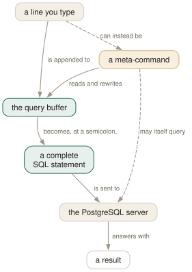

Day 01
The query buffer
Nothing is sent until a semicolon says so — and the prompt tells you what is waiting.
By the end of today you can
- explain why pressing Enter does not send your query but a semicolon does
- read the second character of the prompt and know exactly what psql is still waiting for
- repair a long mistyped query with
\p,\eand\rinstead of typing it out again
psql looks like a REPL and is not one
What you type does not go anywhere. It accumulates in a query buffer, and the buffer is handed to the server only when something dispatches it. Almost every confusing thing psql does in your first hour with it follows from that one fact.
Two things dispatch the buffer: a semicolon, and \g. An end of line does not. So a statement can be spread over as many lines as it needs, and pressing Enter on an unfinished one is not a mistake — it is the normal way to write anything longer than a screen width.
Everything else you type is a meta-command: a line starting with an unquoted backslash, handled by psql itself rather than sent anywhere. There are 121 of them in 18.6, and the majority are described in the manual page as acting on the query buffer — which is why the buffer is the first noun worth learning rather than the fortieth.

\d and friends issue behind your back — Day 17 shows you how to watch those. The dashed aspects are the partial ones: not every line is a meta-command, and most meta-commands never touch the connection.The prompt is a status display, not decoration
The default prompt is four separate pieces of information. Connected to testdb as a superuser you see testdb=#, and that decomposes as:
testdb- the database you are connected to — it changes when you
\celsewhere =- psql is ready for a new statement. This is the character that changes most, and the next section is about it.
- (nothing)
- the transaction slot, empty outside a transaction block. It shows
*inside one and!once a statement in it has failed. Day 8. #- a superuser gets
#, everybody else gets>. Worth a glance before everyDELETE.
When the buffer is unfinished, the third character is replaced by one that says why psql wants more input. This is the single highest-value thing to learn about psql's interface, because it turns “it has hung” into a diagnosis:
-- the statement is simply not terminated yet. Type a semicolon.
'- an unfinished single-quoted string.
"- an unfinished quoted identifier.
(- an unmatched left parenthesis.
*- an unfinished
/* ... */comment. $- an unfinished dollar-quoted string — the usual one inside a function body.
testdb=# SELECT first, second
testdb-# FROM my_table
testdb-# WHERE second = 'two'
testdb-# ;
first | second
-------+--------
2 | two
(1 row)
Six commands that talk about the buffer
These are worth having as reflexes before you learn a single describe command.
\p- print the buffer. After a big paste, this is how you confirm it arrived whole.
\r- reset it — discard everything typed so far without sending it.
\e- open the buffer in
$PSQL_EDITOR,$EDITORor$VISUAL— in that order, defaulting tovi. Day 7. \w file- write the buffer to a file rather than the server.
\g- send it. On an empty buffer it re-runs the last query instead, which makes it a one-keystroke refresh.
\;- append a semicolon without dispatching.
SELECT 1\; SELECT 2;sends both statements as a single request — and therefore a single transaction. Day 8 explains why you would want that.
Where the two languages meet
Meta-command arguments are parsed by psql, not by SQL, and the rules are their own. Parsing stops at the end of the line — an argument can never continue onto the next one. An unquoted backslash starts a new meta-command, so several can share a line. And the special sequence \\ means “arguments end here, resume reading SQL”, which is how you mix the two:
$ echo '\x \\ SELECT * FROM my_table;' | psql testdb
Single quotes group an argument and permit the usual C escapes (\n, \t, \xNN). Double quotes around an identifier argument protect it from being folded to lower case — the same rule SQL uses, so \d FOO describes foo and \d "Foo" describes Foo.
Two escape hatches you need on day one, and then rarely: \? lists every meta-command in the twelve groups psql organises them into, and \h gives SQL syntax — \h ALTER TABLE rather than a trip to the browser. Multi-word commands need no quoting.
Today's habit
Stop retyping queries. When something is wrong with a long statement, the answer is \e and never the up-arrow followed by twenty presses of the left arrow. When a paste looks like it hung, look at the second character of the prompt before you look at anything else.
Tomorrow: getting connected to the right database on purpose rather than by luck.
New vocabulary
Keys
| Key | Does |
|---|---|
| C-c | Abandon the line you are typing and empty the query buffer. |
| C-d | End the session — but only when the buffer is empty. |
Commands
| Command | Does |
|---|---|
psql | Connect with the defaults and start an interactive session. |
; | Dispatch the buffer. Not a meta-command — SQL's own statement terminator. |
\g | Dispatch the buffer, exactly as a semicolon does. |
\p | Print the buffer without sending it. \print in full. |
\r | Reset: throw the buffer away. \reset in full. |
\e | Edit the buffer in $EDITOR; on exit it is re-parsed and run. |
\w file | Write the buffer to a file instead of sending it. |
\; | Append a semicolon to the buffer without dispatching it. |
\? | Every meta-command, in twelve groups. 121 of them in 18.6. |
\h SELECT | Syntax for one SQL command. \h alone lists what it knows. |
\q | Quit. |
Drillsdo these in a real terminal, today
Self-check
Answer out loud first, then unfold.
You paste a 40-line query and press Enter. psql sits there showing testdb-# and does nothing. Nothing is wrong with the query. What happened?
The paste had no trailing semicolon, so the whole thing is sitting in the query buffer waiting to be dispatched. The - in the prompt is %R reporting exactly that: “the statement simply is not terminated yet”.
Type ; or \g. This is also why \p is worth reaching for after a large paste — a terminal that dropped a line will show up there before the server ever sees it.
You mistype and end up at a '# prompt. \r does nothing, and \q answers “Use control-D to quit.” Why have your meta-commands stopped working?
Because a meta-command is a line beginning with an unquoted backslash, and you are inside an unfinished single-quoted string. Every backslash you type is now just a character in that string, so psql has nothing to obey.
Two ways out. Type a closing ' — the prompt reverts to -# and \r works again — or press C-c, which abandons the line and empties the buffer regardless of what is in it.
Why does psql use a semicolon rather than Enter to send a statement, when every other interactive interpreter you use sends on Enter?
Because SQL statements are routinely longer than a line, and psql has no way to know whether SELECT count(*) is finished or about to grow a FROM clause. Rather than guess, it delegates the decision to SQL's own statement terminator and lets you lay a query out over as many lines as it deserves.
The other bargain is available: -S (or SINGLELINE) makes a newline terminate a statement too. The manual page offers it “for those who insist on it” and then says you are not encouraged to use it, because mixing SQL and meta-commands on one line stops being predictable.
You try psql -c 'SELECT 1 \gdesc' and get a syntax error pointing at the backslash. But the same two lines work fine when you type them at the prompt. What is different?
A -c string never enters the query buffer. It is handed to the server as one request, so it has to be either something the server can parse — pure SQL — or a single backslash command that psql handles itself. There is no buffer in between for \gdesc to act on, and the server has no idea what a backslash means.
Repeat the flag instead (psql -c '\x' -c 'SELECT 1') or feed the pair on standard input, where the buffer does exist. Day 11 takes this apart properly.
Cheat sheet
Day 1 in nine lines. The prompt characters are the part to memorise.
; -- dispatch the buffer; \g does the same, and repeats on an empty buffer
\p -- print the buffer \r throw it away \e edit it \w save it
\; -- semicolon WITHOUT dispatch: one request, one transaction
\? -- all 121 meta-commands, in 12 groups \h SELECT -- SQL syntax
C-c -- abandon the line and empty the buffer C-d quit (empty buffer only)
-- second prompt character = what psql is waiting for:
-- = ready - unterminated statement ' open string " open identifier
-- ( open paren * open /* comment */ $ open $$ quote
-- last prompt character: # superuser, > not. Before it: * in tx, ! failed tx.
Everything through Day 01
Keys
| Key | Does |
|---|---|
| C-c | Abandon the line you are typing and empty the query buffer. |
| C-d | End the session — but only when the buffer is empty. |
Commands
| Command | Does |
|---|---|
psql | Connect with the defaults and start an interactive session. |
; | Dispatch the buffer. Not a meta-command — SQL's own statement terminator. |
\g | Dispatch the buffer, exactly as a semicolon does. |
\p | Print the buffer without sending it. \print in full. |
\r | Reset: throw the buffer away. \reset in full. |
\e | Edit the buffer in $EDITOR; on exit it is re-parsed and run. |
\w file | Write the buffer to a file instead of sending it. |
\; | Append a semicolon to the buffer without dispatching it. |
\? | Every meta-command, in twelve groups. 121 of them in 18.6. |
\h SELECT | Syntax for one SQL command. \h alone lists what it knows. |
\q | Quit. |